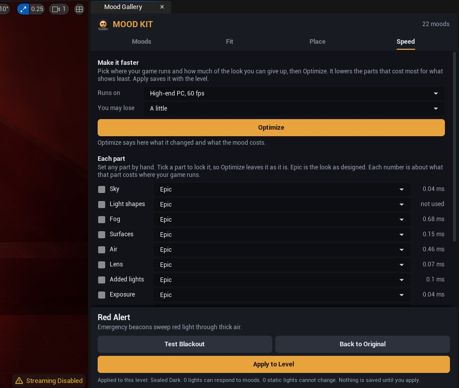
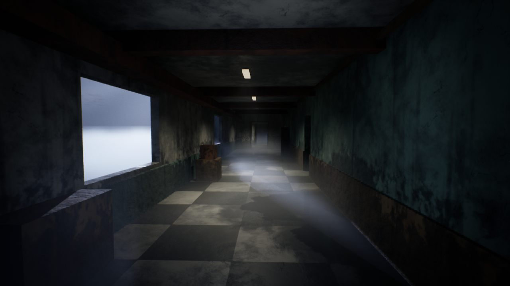
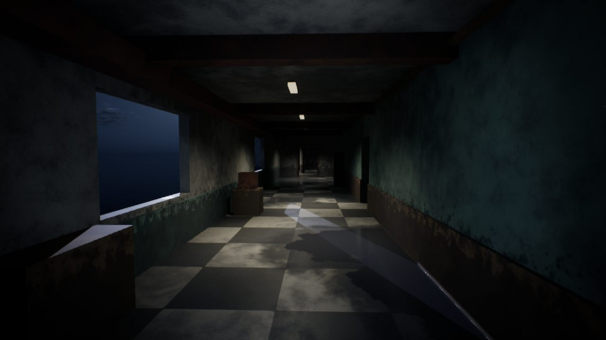

Speed, consoles and phones
Every part of a mood can do less work. Optimize lowers the parts that cost most for what shows least, until the mood fits wherever your game runs.
On this page
Optimize
- Show a mood. Open the Mood Gallery and click a mood card.
- Open the Speed tab. Under Runs on, pick where your game runs: a high-end PC, a mid-range PC, a console at 60 or 30 frames a second, or a phone.
- Pick how much you may lose. Nothing only makes the savings that change nothing you can see. A little, Some and A lot let it go further.
- Click Optimize. It says what the mood costs there before and after, and every part it changed.
- Click Apply to Level to keep it, and save the level.


Optimize keeps the mood to about a seventh of a frame where your game runs: 2.5 milliseconds at 60 frames a second, 5 at 30. If it cannot get there with the loss you chose, it says so, and you can allow more.
Each part
Under Each part you can set any part by hand, from Epic, the look as designed, down to Low. Tick a part to lock it, so Optimize leaves it as it is. The number beside each part is about what it costs where your game runs. With Runs on set to a phone, the parts a phone cannot draw say off on phones, even when they are locked.
| Part | Epic | High | Medium | Low |
|---|---|---|---|---|
| Sky | clouds lit in three steps and every star | clouds lit in two steps | clouds lit in one step | flat clouds and fewer stars |
| Light shapes | two layers of branch shadows | one layer of branch shadows | simple cloud, branch and blind shadows | no cloud, branch or blind shadows |
| Fog | the full fog bank | a simpler fog bank | light in the fog, no fog bank | height fog only, no light in the fog |
| Surfaces | adds rain rings in puddles | adds drips, cracks and relief | dirt, stains, damp and wet floors | no surface wear |
| Air | to 36 m, four sheets of rain | to 28 m, three sheets of rain | to 20 m, two sheets of rain | dust and flakes to 12 m, one sheet of rain |
| Lens | every lens effect | every lens effect | one layer of drops, no colour split | no lens effects |
| Added lights | added lamps and torch cast shadows | 4 added lamps, torch shadows | 3 added lamps, torch shadows | 2 added lamps, no shadows |
| Exposure | measured twice a second | measured every second | measured every 2 seconds | measured once |
| Bounce light | the level's own | the level's own | reflections from the screen only | no bounce light |
Bounce light is your level's own Lumen light, not the mood's, so Optimize never lowers it. Lower it by hand for a big saving on consoles: Medium takes reflections from the screen, and Low turns Lumen's bounce light off while a mood is on.
Savings that cost no look
These happen at every quality, by themselves:
- Dust and the lens draw over the whole picture, so each switches off while it has nothing to draw.
- Dead lamps switch off entirely, shadows and all, instead of glowing faintly.
- Added lamps that are dark at the moment switch off, and so does the torch between camera flashes.
- The exposure is not measured again while the view stands still and the light stays the same.
In your game
- Follow the game's graphics settings is on at first. Each part goes no higher than your game's own graphics settings, so a player who picks Low in your menu gets a lighter mood too.
- Keep the frame rate lowers parts of the mood one at a time while frames take longer than the rate you set, and raises them again when there is room. It only keeps a step that makes the frames faster. If a few steps do not help, because the game is held back by a frame rate cap, VSync or the processor, it takes them back and waits until the game gets clearly slower. A rate your game can never reach therefore keeps the look, but it is still best to set the rate your game aims for.
Both are saved on the mood actor by Apply to Level. Blueprints can change them while the game runs, with the nodes under Speed on Blueprint nodes: Set Mood Quality, Set Mood Quality Level, Set Mood Keep Frame Rate and Set Mood Follow Game Settings.
Phones
On Android and iOS each part stays within what phones can draw, whatever the level asks for. Phones have no light in the fog and no Lumen, so a phone gets the height fog only, no fog bank and no light shapes, a lighter sky, lighter surfaces and lens, two added lamps without shadows, and the exposure measured once.
Every look material comes with a phone version of its own, which Unreal picks by itself on a phone.


Epic on PCPhoneConsoles
Consoles draw with the same renderer as a PC, so every part works there. The console targets in Runs on stand for a PlayStation 5 or Xbox Series X class graphics card. The kit was not tested on console hardware, which needs a console maker's development kit.
Where the numbers come from
Each part was measured on the test PC, an RTX 5070, at 1920 × 1080, with Unreal's own graphics timers. The sky and the exposure are estimates, because their work falls outside the frame those timers measure. Runs on scales those numbers by how much slower each kind of machine usually is. They are estimates: the real cost also depends on your level, your settings and the screen size.
| Part | Epic | High | Medium | Low |
|---|---|---|---|---|
| Sky | 0.035 ms | 0.03 ms | 0.025 ms | 0.02 ms |
| Light shapes | 0.055 ms | 0.05 ms | 0.045 ms | none |
| Fog | 0.68 ms | 0.64 ms | 0.51 ms | none |
| Surfaces | 0.15 ms | 0.145 ms | 0.13 ms | none |
| Air | 0.46 ms | 0.37 ms | 0.28 ms | 0.18 ms |
| Lens | 0.073 ms | 0.073 ms | 0.07 ms | none |
| Added lights | 0.1 ms | 0.06 ms | 0.05 ms | 0.03 ms |
| Exposure | 0.04 ms | 0.02 ms | 0.01 ms | none |
| Bounce light | 3.15 ms | 3.05 ms | 2.9 ms | 0.2 ms |
| Runs on | Compared with the test PC | The mood's share of a frame |
|---|---|---|
| High-end PC, 60 fps | the test PC | 2.5 ms |
| Mid-range PC, 60 fps | about 4.3 times slower | 2.5 ms |
| Console, 60 fps | about 2.4 times slower | 2.5 ms |
| Console, 30 fps | about 2.4 times slower | 5 ms |
| Phone, 30 fps | about 16 times slower | 5 ms |